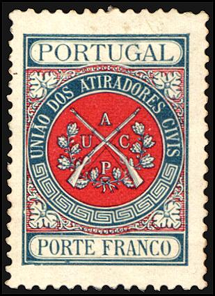

Return To Catalogue - Portugal - Portugal Fiscal Stamps
Note: on my website many of the
pictures can not be seen! They are of course present in the
catalogue;
contact me if you want to purchase the catalogue.
Postcards, envelopes etc. with similar design as the postage stamps of the same period:
15 r brown 20 r blue 25 r blue (1879) 30 r green 50 r red

Reduced sizes
10 r brown 20 r red 25 r brown on yellow 50 r blue on blue Surcharged 'Valido 1893' 10 r brown 20 r red
"CONTINENTE" below
10 r lilac 10 r black on green (1895) 20 r blue 25 r green on yellow 25 r green 30 r blue 50 r blue on blue 50 r blue "UNION POSTALE" on top value below 20 r lilac (1895) (other values exist?)
(Sorry, no picture available yet)
'Vez' r lilac
'Dez' r lilac


5 r black 10 r lilac 20 r red 50 r grey 100 r red on red 200 r brown on yellow
I've often seen these stamps with a black 'T' in a circle cancel(?).
Value of the stamps |
|||
vc = very common c = common * = not so common ** = uncommon |
*** = very uncommon R = rare RR = very rare RRR = extremely rare |
||
| Value | Unused | Used | Remarks |
| 5 r | * | * | |
| 10 r | ** | ** | |
| 20 r | ** | ** | |
| 50 r | *** | *** | |
| 100 r | *** | *** | |
| 200 r | R | R | |
Overprinted 'REPUBLICA' and bar over 'MULTA' to be used as postage stamps
5 r black 10 r lilac 20 r red 200 r brown on yellow 300 r on 50 r grey 500 r on 100 r red on red
Value of the stamps |
|||
vc = very common c = common * = not so common ** = uncommon |
*** = very uncommon R = rare RR = very rare RRR = extremely rare |
||
| Value | Unused | Used | Remarks |
| 5 r | c | c | |
| 10 r | c | c | |
| 20 r | * | * | |
| 200 r | *** | *** | Forgeries exist! |
| 300 r on 50 r | *** | *** | Forgeries exist! |
| 500 r on 100 r | ** | ** | Forgeries exist! |
These stamps exist with overprint 'ACORES'
More information about the forgeries of the 50 r, 100 r and 200 r (with and without 'REPUBLICA') can be found at: http://www.tabacaria.org/Selos/Continoutros/Porteado1898.htm.
Value in 'REIS'

5 r brown 10 r orange 20 r lilac 30 r green 40 r lilac 50 r red 100 r blue
These stamps have perforation 11 1/2 x 12.
Value of the stamps |
|||
vc = very common c = common * = not so common ** = uncommon |
*** = very uncommon R = rare RR = very rare RRR = extremely rare |
||
| Value | Unused | Used | Remarks |
| 5 r | c | c | |
| 10 r | * | * | |
| 20 r | * | * | |
| 30 r | * | * | |
| 40 r | * | * | |
| 50 r | * | * | |
| 100 r | *** | *** | |
Overprinted 'REPUBLICA' in red except 50 r (1911)

5 r brown 10 r orange 20 r lilac 30 r green 40 r lilac 50 r red (overprint green) 100 r blue
Value of the stamps |
|||
vc = very common c = common * = not so common ** = uncommon |
*** = very uncommon R = rare RR = very rare RRR = extremely rare |
||
| Value | Unused | Used | Remarks |
| 5 r | c | c | |
| 10 r | c | c | |
| 20 r | c | c | |
| 30 r | c | c | |
| 40 r | c | c | |
| 50 r | * | * | |
| 100 r | * | * | |
Value in 'CENTAVOS' (1915)
1/2 c brown 1/2 c green 1 c orange 2 c brown 3 c green 4 c violet 4 c green 5 c red 8 c green 10 c blue 10 c green 12 c green 16 c green 20 c green 24 c green 32 c green 36 c green 40 c green 48 c green 50 c green 60 c green 72 c green 80 c green 1 E 20 c green
Value of the stamps |
|||
vc = very common c = common * = not so common ** = uncommon |
*** = very uncommon R = rare RR = very rare RRR = extremely rare |
||
| Value | Unused | Used | Remarks |
| 1/2 c brown | vc | vc | |
| 1/2 c green | vc | vc | |
| 1 c | vc | vc | |
| 2 c | vc | vc | |
| 3 c | vc | vc | |
| 4 c violet | vc | vc | |
| 4 c green | vc | vc | 1927 |
| 5 c | vc | vc | |
| 8 c | vc | vc | |
| 10 c blue | c | c | |
| 10 c green | vc | vc | |
| 12 c to 72 c | c | c | |
| 80 c | * | c | |
| 1.20 E | * | * | |
These stamps exist with overprint 'ACORES'

5 c yellow 10 c blue 20 c red 30 c blue 40 c green 50 c grey 60 c red 80 c brown 1.20 E olive (1933)
Stamps with inscription IMPERIO COLONIAL
PORTUGUES PORTEADO' were issued for Portuguese
Africa in 1945
5 c light brown 10 c lilac 20 c red 30 c violet 40 c red 50 c blue 60 c green 80 c red 1 E brown 2 E violet 5 E orange
10 c orange and yellow 20 c brown and yellow 30 c orange and yellow 40 c brown and yellow 50 c violet and light blue 60 c blue and light blue 80 c blue and light blue 1 E violet and light blue 2 E olive and green 5 E red and lilac 3 E green and light green 4 E grey and light green 9 E violet and lilac 10.00 E violet and lilac 20.00 E red and lilac

01 c brown 02 c orange 05 c brown 10 c red 20 c grey 40 c red 50 c black 60 c blue 70 c brown 80 c blue 90 c lilac 1 E green 2 E lilac 3 E olive 4 E blue 5 E grey 10 E brown
These stamps have perforation 12 1/2.
Value of the stamps |
|||
vc = very common c = common * = not so common ** = uncommon |
*** = very uncommon R = rare RR = very rare RRR = extremely rare |
||
| Value | Unused | Used | Remarks |
| 1 c | vc | vc | |
| 2 c | vc | vc | |
| 5 c | vc | vc | |
| 10 c | c | vc | |
| 20 c | c | c | |
| 40 c | c | c | |
| 50 c | c | c | |
| 60 c | c | c | |
| 70 c | * | * | |
| 80 c | * | * | |
| 90 c | c | c | |
| 1 E | c | c | |
| 2 E | * | c | |
| 3 E | * | c | |
| 4 E | * | * | |
| 5 E | * | * | |
| 10 E | ** | c | |

These stamps exist with overprint 'ACORES'
0.50 $ olive 1.00 $ light brown 1.50 $ violet 2.00 $ red 2.50 $ green 4.50 $ red 5.00 $ lilac 10.00 $ orange
(Inscription 'TELEGRAFOS REPUBLICA PORTUGUESA')
5 c brown
This stamp was apparently ment to pay a fee for telegrams posted on sundays and public holidays. This stamp exists with overprint 'ACORES':
In 1929, this stamp was overprinted 'CORREIO' and surcharged to
serve as a postage stamp.
Other telegraph stamps can be found under 'Special Stamps'.

(1915 Para os Pobres)
1 c red (CORREIO) 2 c brown (TELEGRAFOS) 15 c red (CORREIO, 1925) 30 c brown (TELEGRAFOS, 1925) Surcharged '15 ctvs.' on 1 c red (1924) '30 ctvs.' on 2 c brown (1924)
Value of the stamps |
|||
vc = very common c = common * = not so common ** = uncommon |
*** = very uncommon R = rare RR = very rare RRR = extremely rare |
||
| Value | Unused | Used | Remarks |
| 1 c | vc | vc | 'CORREIO' |
| 2 c | c | c | 'TELEGRAFOS' |
| 15 c | c | c | 'CORREIO' |
| 30 c | * | * | |
| 15 c on 1 c | c | c | |
| 30 c on 2 c | * | * | |
Some of these stamps exist with overprint 'ACORES'

(1925 Padroes da grande guerra)
10 c green 10 c red 10 c blue 10 c brown Postage due stamp (different design) 20 c red
These stamps exist with overprint 'ACORES'
Normal and postage due stamp with overprint 'ACORES'
15 c blue (portrait of Pombal) 15 c blue (Pombal shows rebuilding plan) 15 c blue (statue) With addtional inscription 'MULTA' (postage due) 30 c blue (portrait of Pombal) 30 c blue (Pombal shows rebuilding plan) 30 c blue (statue)
Many Portuguese colonies also issued similar stamps (in other colours). Click here for more information. Example Mozambique:
I have seen stamps with the inscription 'CORREIOS REINO DE PORTUGAL':
(Reduced sizes)
I have seen the values 2 1/2 r black, 5 r black, 10 r brown and 35 r green. There also should be a 20 r brown. They exist imperforate and perforated (11 for the specialist). These stamps seems to have been issued in Porto during an insurrection in order to re-install the monarchy in 1919.
I have also seen a postcard 'Bilhete Postal' with inscription 'Reino de Portugal' in the value 20 r blue. The postcard bears a design similar to the ones above.
Several societies had the right to send mail with special 'Porte Franco' stamps. Among them a red cross stamp in 1899, a riffle association, inscription 'UNAIO DOS ATIRADORES CIVIS' (1899-1920, 12 different stamps), the Tuberculosis association, inscription 'ASSISTENCIA NACIONAL AOS TURBERCULOSOS' (1905, 2 different stamps), the Geographical Society (1905-38, various stamps in different colours; in 1934 a new type was introduced, the inscription is 'SOCIEDADE DE GEOGRAPHIA DE LISBOA').
Examples:

(red cross stamp of 1889, exists with and without green diagonal
overprint)

Porte Franco stamp for the Geographical Society of Lisbon.
Some other Red Cross franchise stamps were issued in 1926, they have the image of a nurse, looking after a patient. Two types exist, one with inscription 'LISBOA' and the other with 'DELEGACOES'. They are both in the colour combination black and red.
Some postage stamps also exist with overprint 'CRUZ VERMELHA Porto Franco' with year or also 'Porte Franco', cross and year in red colour.
(Tuberculosis stamp in red and yellow; it also exists in the
colour combination brown and green)

Riffle association stamp


{kind=link}
{kind=link}
{kind=link}